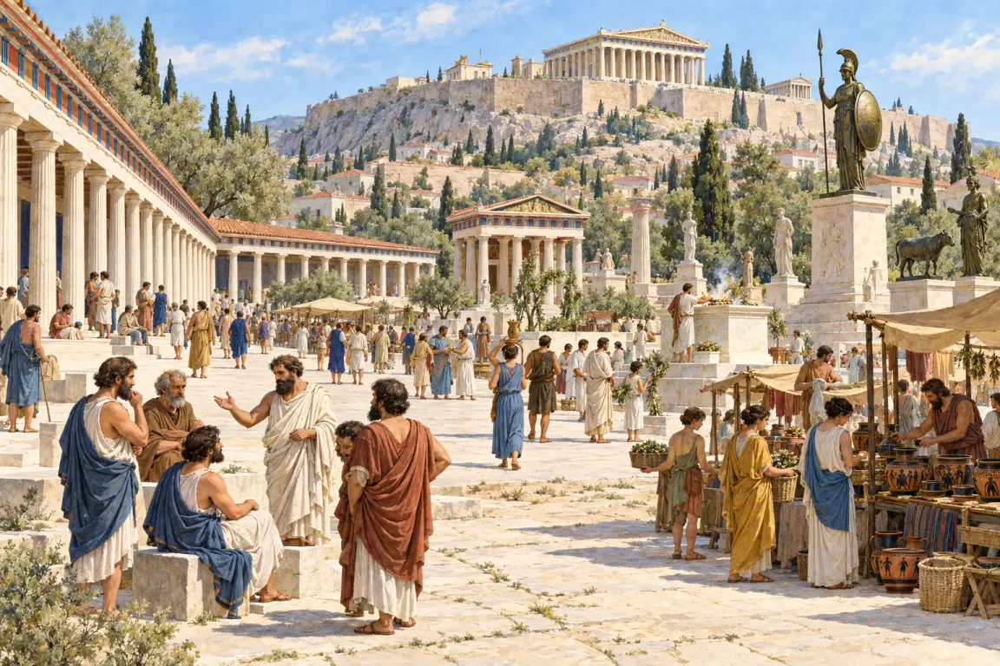
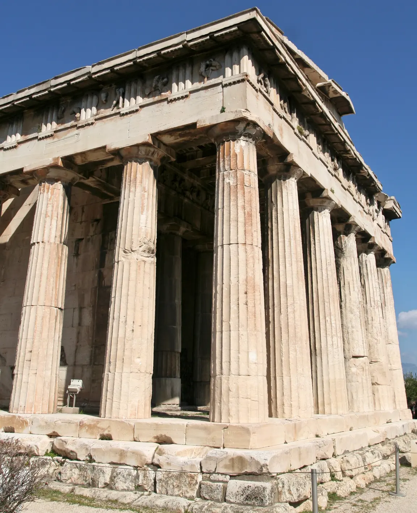
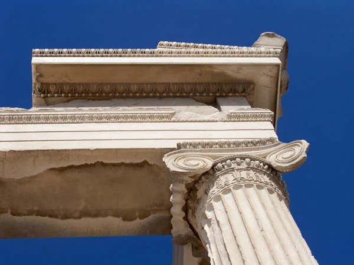
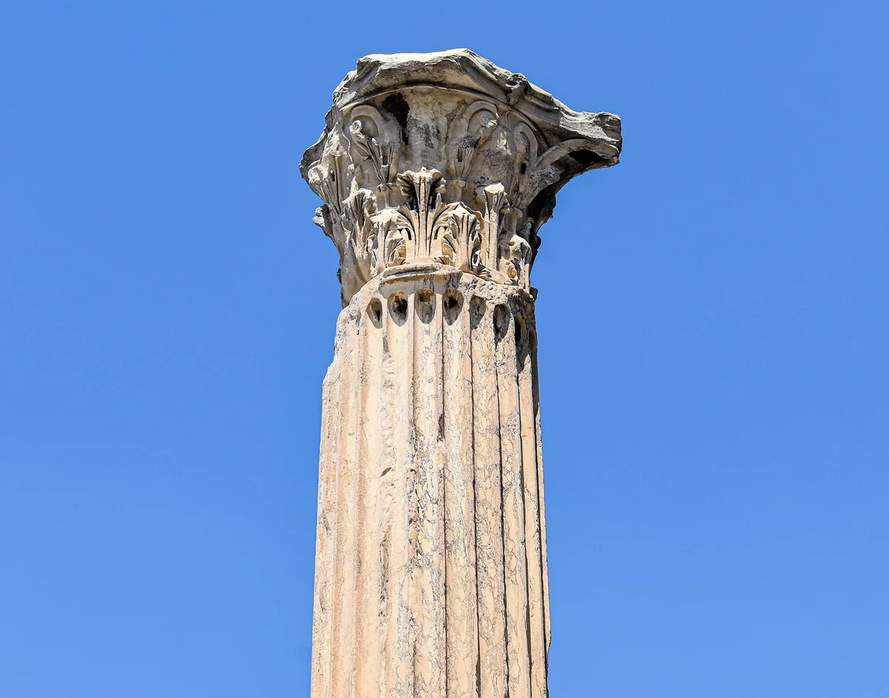
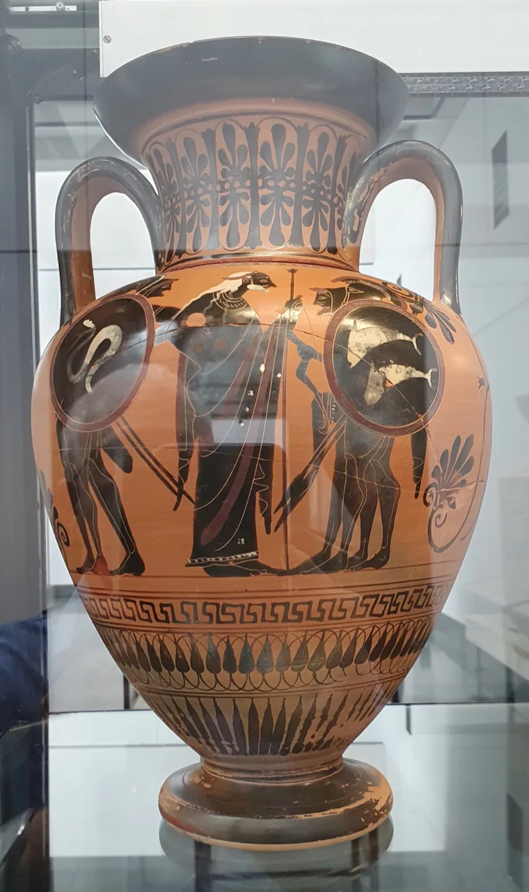
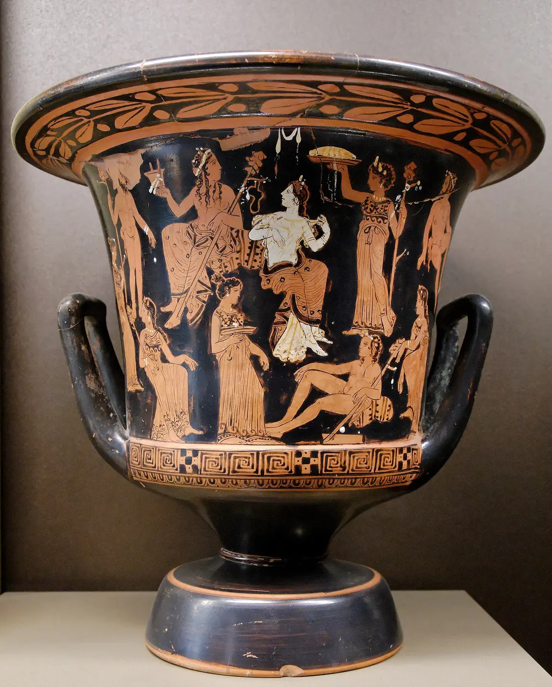
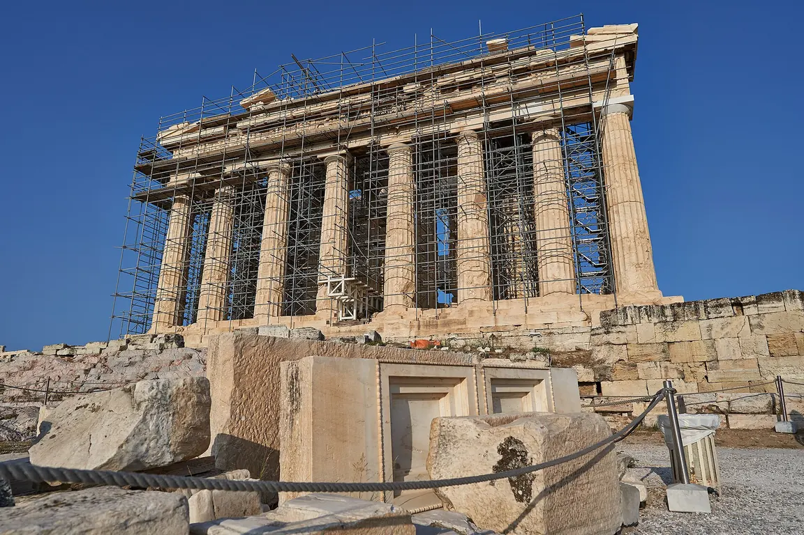
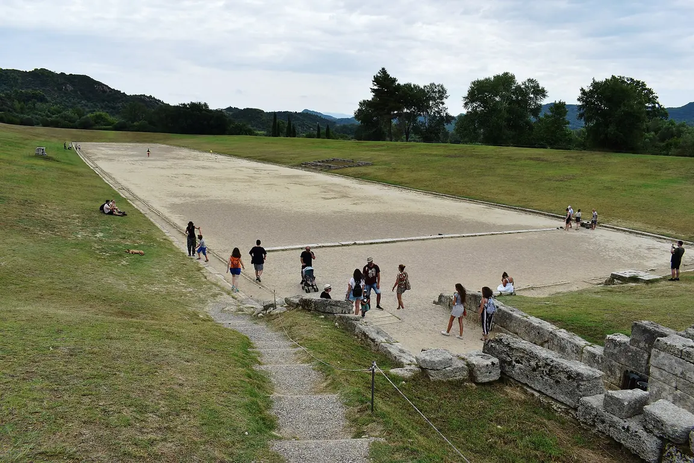

Athény
Vznikla tu demokracie – vláda lidu. O věcech hlasovali na sněmu svobodní muži, občané. Ženy, otroci a cizinci hlasovat nesměli.
Pro 6. ročník: městské státy, athénská demokracie, Sparta, olympijské hry a kultura.
Řecko je hornatá země s mnoha ostrovy. Hory oddělovaly údolí od sebe, a tak tu nevznikl jeden velký stát, ale mnoho samostatných městských států – polis. Každá polis měla vlastní zákony, vojsko i boha ochránce. Spojovala je řeč, náboženství a olympijské hry.
Vznikla tu demokracie – vláda lidu. O věcech hlasovali na sněmu svobodní muži, občané. Ženy, otroci a cizinci hlasovat nesměli.
Vychovávala chlapce hlavně jako vojáky. Proslavil se spartský král Leónidás při obraně Thermopyl.
Divadlo (tragédie a komedie), filozofie (Sokrates), eposy Homéra, chrám Parthenón na athénské akropoli.
Proti velké Perské říši se městské státy dokázaly spojit a zvítězily u Marathónu a u Salamíny. Potom Athény za Perikla rozkvetly. Později celé Řecko ovládla Makedonie a její král Alexandr Veliký vytvořil říši až k Indii.
Typická chyba: myslet si, že v athénské demokracii hlasovali všichni obyvatelé. Hlasovala jen menšina – dospělí muži s občanstvím.
Seřaď od nejstarší: popraven Sokrates (399 př. n. l.), bitva u Marathónu (490 př. n. l.), první doložené olympijské hry (776 př. n. l.), Alexandr Veliký nastoupil na trůn (336 př. n. l.).
✅ olympijské hry (776) → Marathón (490) → Sokrates (399) → Alexandr Veliký (336 př. n. l.)

Skutečné stavby a nádoby, které můžeš vidět dodnes. Všímej si, podle čeho se od sebe liší.







Řecko tvořily samostatné městské státy (polis). V Athénách vznikla demokracie – o veřejných věcech rozhodovali svobodní muži na sněmu. Sparta naopak vychovávala své občany hlavně jako vojáky.